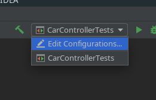
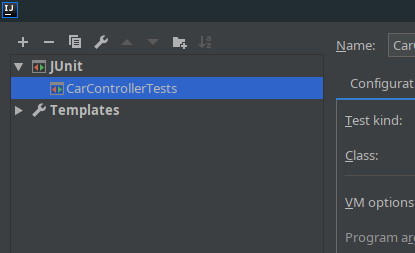
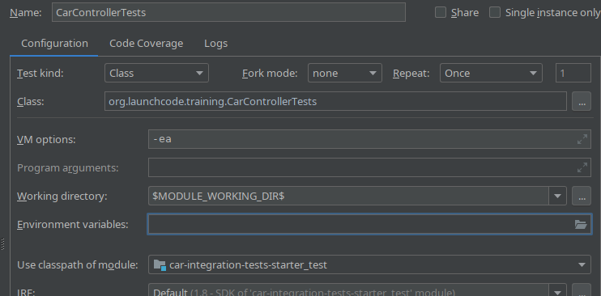
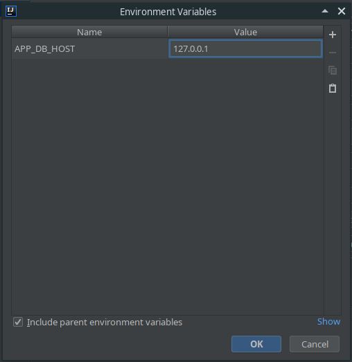
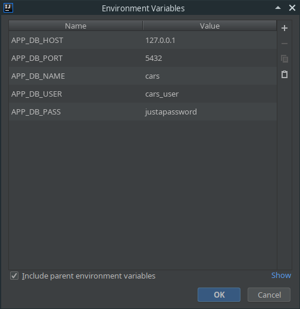
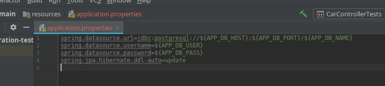

Configuration: Environment Variables - IntelliJ
Environment Variables
An environment variable is a variable that is declared outside of the code of our project. We then load this outside variable into our project using a token.
- Environment variables provide two major benefits:
- Protect sensitive data
- Code doesn’t need to be altered for different environments
Many projects need to include sensitive data: usernames, passwords, IP addresses, etc, instead of including this data in our project we use environment variables.
In this configuration we will learn how to create new environment variables in IntelliJ, and we will learn the syntax for calling those variables in our code.
Create Environment Variable
We add environment variables to our run time configurations.
Click edit configurations on the dropdown box for your runtime configurations.

Select the runtime you want to add environment variables to.

Click environment variables folder icon to pull up the environment variables screen.

From here you can add as many environment variables as you want. You do this by hitting the little plus sign in the top right corner of this box.

In this case I’m going to store the information about my database. This includes the IP address, the port, the username, and the password for my database. This is information I don’t want to push to github, and that I don’t want in my project.

Now that I have create my environment variables I need to use them.
Syntax
In IntelliJ we can use our environment variables by using Tokens. IntelliJ recognizes this token as an environment variable and replaces the content of your environment variable in place of the token.
A token looks like this: ${ENV_VAR_NAME}
We wrap the environment variables in curly brackets and start it with a dollar sign. This tells IntelliJ to use the environment variable in place of this token.
In this case I will be using the DataBase environment variables to configure this application with my database. Within the application.properties file

I am using the application.properties file to configure my database.
In the first line we are configuring the JDBC (Java DataBase Connection). Defining it as a psql database, with an IP address of 127.0.0.1 (represented by the ${APP_DB_HOST} token), a port of 5432 (represented by the ${APP_PORT} token), and a database name of cars (represented by the ${APP_DB_NAME} token).
In the next two lines we continue using environment variables. We set the database user name, and the database user password. All of these environment variables are stored for us inside of IntelliJ, and not a part of our project. This allows us to keep them separate, and not accidently commit them to git, and expose our Database URL, User, and password.